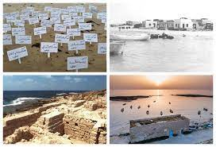
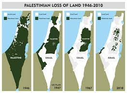
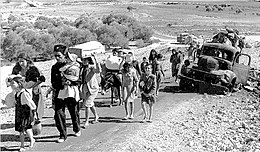

يُواجه الفلسطينيون العديد من الانتهاكات والتحديات اليومية من قبل السلطات الإسرائيلية في الأراضي
الفلسطينية المحتلة. هذه الانتهاكات تشمل مجموعة واسعة من القضايا التي تؤثر على حقوق الإنسان والكرامة
الإنسانية للفلسطينيين
الاستيطان والضم
بناء المستوطنات الإسرائيلية في الضفة الغربية والقدس الشرقية يعتبر انتهاكًا واضحًا للقانون الدولي
ويُعرقل إمكانية إقامة دولة فلسطينية مستقلة. خطط إسرائيل للضم الجزئي أو الكامل لبعض المناطق من الضفة
الغربية تثير قلقًا كبيرًا من تدهور الوضع الإنساني والسياسي في المنطقة
الحصار على قطاع غزة
يفرض الحصار الإسرائيلي على قطاع غزة منذ سنوات، مما يؤدي إلى انعدام الحرية والحدود المغلقة التي تحد من
حركة الأفراد والبضائع وتقييد الوصول إلى الخدمات الأساسية مثل المياه والكهرباء والرعاية الصحية
انتهاكات حقوق الإنسان
التجاوزات والانتهاكات اليومية التي تُمارس ضد الفلسطينيين، مثل اعتقال التعسفي والتحقيقات غير القانونية
والتهجير القسري والتجاوز على الممتلكات
العنف والاعتداء
الاعتداءات المتكررة من قبل المستوطنين الإسرائيليين على الفلسطينيين وممتلكاتهم والمزارعين والمدارس
وغيرها، مما يؤدي في بعض الأحيان إلى إصابات خطيرة وحتى القتل
عدم المساواة والتمييز
تواجه الفلسطينية والفلسطينيون في إسرائيل نوعًا من التمييز النظامي، سواء في الفرص الاقتصادية أو
الوصول إلى الخدمات الأساسية مقارنةً بالمواطنين الإسرائيليين
تلك الانتهاكات تثير القلق الدولي بشكل كبير وتعرقل الجهود المبذولة للتوصل إلى حل سلمي وعادل للصراع
الفلسطيني الإسرائيلي. الحاجة إلى احترام حقوق الإنسان والالتزام بالقانون الدولي يظل أمرًا ضروريًا
لتحقيق السلام والاستقرار في المنطقة
القتل غير المشروع وجرائم الحرب
قتلت القوات الإسرائيلية أكثر من 2000 مدني فلسطيني في النزاعات الثلاثة الأخير في غزة (2009-2008، 2012،
2014) وحدها. كثير من هذه الهجمات تشكل انتهاكا للقانون الإنساني الدولي بسبب عدم اتخاذ جميع الاحتياطات
الممكنة لتجنب المدنيين. يشكل بعضها جرائم حرب، بما في ذلك استهداف بنى مدنية ظاهرة
في الضفة الغربية، استخدمت قوات الأمن الإسرائيلية القوة المفرطة بشكل روتيني في حالات فرض الأمن، أو
استخدمت الذخيرة الحية لتقتل وتصيب بجروح خطيرة آلاف المتظاهرين، قاذفي الحجارة وآخرين. كان يمكن
استخدام وسائل أقل حدة لتفادي التهديد أو المحافظة على النظام
كما ارتكبت الجماعات الفلسطينية المسلحة جرائم حرب خلال هذه النزاعات وفي أوقات أخرى، بما في ذلك الهجمات
الصاروخية التي استهدفت مراكز سكانية إسرائيلية. منذ بداية الانتفاضة الأولى في ديسمبر/كانون الأول 1987
ونهاية فبراير/شباط 2017، أسفرت الهجمات التي شنها فلسطينيون عن مقتل ما لا يقل عن 1079 مدنيا
إسرائيليا، وفقا لمنظمة "بتسيلم" الإسرائيلية لحقوق الإنسان
التحقيقات الرسمية الإسرائيلية في الانتهاكات المزعومة لقوات الأمن خلال نزاعات غزة وفي أوضاع الشرطة لم
تحاسب المسيئين، إلا في استثناءات نادرة. كما لم تحقق السلطات الفلسطينية في الانتهاكات أو تحاسب
المسؤولين عنها
صور انتهاكات للشعب الفلسطيني


الشهيد محمد الدره
استشهد الصبي محمد الدرة في 30 سبتمبر 2000 في قطاع غزة اليوم الثاني لانتفاضة الأقصى،
وسط احتجاجات أخذت أصداء إعلامية واسعة،التقطت عدسة المصور الفرنسي شارل إندرلان مشهد
اختباء جمال الدرة وولده محمد الدرة خلف برميل اسمنت أثناء إطلاق ناري بين الاحتلال
والفلسطينيين ، كان الأب يشير لتوقف إطلاق النار ليرقد الولد على ساقي والده قتيلاً،
بعد 59 دقيقة من البث الحي للحدث قال رئيس المكتب الفرنسي أن محمد الدرة ووالده كانا
الهدف وتم قتل الصبي
تهجير الفلسطينين
وفقا لجهاز الإحصاء المركزي الفلسطيني (PEBS) وحتى عام 2023، بلغ عدد الفلسطينيين
الموجودين في أراضي ما يُعرف اليوم بـ"دولة فلسطين"، أي في الضفة الغربية وغزة، 5.48
ملايين شخص، وهو ما يُشكِّل قرابة 38% من نسبة الفلسطينيين الذين بلغ عددهم 14.5 مليون
شخص (1) حول العالم، ما يعني أن 62% من الفلسطينيين يعيشون خارج أراضيهم، وهو وضع يعود
بشكل أساسي إلى الحدثين الأساسيين في تاريخ القضية الفلسطينية اللذين رسّما الواقع على
الأرض اليوم؛ حرب عام 1948 (النكبة) وما تبعها من حملات تهجير قسري حتى عام 1949، وحرب
الخامس من يونيو/حزيران عام 1967 (النكسة)
اعتمدت العصابات الصهيونية في عملية تهجيرها للفلسطينيين في عام 1948 بشكل أساسي على
مجموعة من المجازر التي ارتكبتها بحق بعض القرى الفلسطينية، وحاولت من خلالها أن ترهب
الفلسطينيين وتدفعهم إلى مغادرة أراضيهم، وهي حالة ساهمت فيها المذبحة بالتوازي مع
البروباغندا التي ترافقت معها، وتُعَدُّ مذبحة دير ياسين النموذج الأساسي في هذا
السياق، التي تعتبرها العديد من الدراسات حدثا مفصليا في تهجير الفلسطينيين عام 1948
(2)، واستمر الاحتلال بتهجير الفلسطينيين بوضوح إلى غاية منتصف الخمسينيات من القرن
الماضي
لم تتوقف الهجرة الفلسطينية مع حرب 1967، فمع أنها كانت الحرب الكُبرى الأخيرة التي
أطلقها الاحتلال لتوسيع أراضيه ونتج عنها تهجير واسع، فإنه لم يتوقف بعدها عن ممارسة
سياسات قهرية وترحيلية رفعت من كلفة العيش المادية والمعنوية على الفلسطينيين في
أراضيهم، مما ولّد حالة تهجير صامت وبطيء رصدها الجهاز المركزي للإحصاء الفلسطيني
بالأرقام عام 2016 (6)، وهي سياسات شملت التضييق الاقتصادي، وهدم المنازل، والسيطرة على
الأراضي، وتقييد الحركة، والاعتقالات، وتكثيف السياسات الأمنية، حيث دفعت هذه السياسات
مجتمعة بكثير من الفلسطينيين، وخصوصا الشباب والنخب العاملة والمتعلمة، إلى البحث عن
فرص في الخارج
تهجير اهل الطنطوره
في صباح يوم 22 مايو 1948، شنت القوات الإسرائيلية هجومًا واسع النطاق على قرية
الطنطورة، وهي قرية فلسطينية تقع على الساحل الفلسطيني دمرت القوات الإسرائيلية القرية
بالكامل، وطردت سكانها البالغ عددهم 1,200 نسمة، بما في ذلك النساء والأطفال. كما
اعتقلت القوات الإسرائيلية العديد من السكان، وقُتل بعضهم رميًا بالرصاص.
كان تهجير أهل الطنطورة جزءًا من عملية تهجير واسعة النطاق قامت بها القوات الإسرائيلية
ضد الفلسطينيين خلال حرب 1948. تم تهجير أكثر من 700,000 فلسطيني من منازلهم خلال
الحرب، وشكلوا ما يقرب من نصف السكان الفلسطينيين في فلسطين يعتبر تهجير أهل الطنطورة
من الجرائم ضد الإنسانية، ولا يزال ملفه مفتوحًا حتى اليوم
اقتحام المسجد الاقصي
وفقًا لمركز معلومات فلسطين، فقد اقتحمت قوات الاحتلال الإسرائيلي المسجد الأقصى أكثر من
300 مرة منذ عام 1967. وبحسب المركز، فقد بلغ عدد اقتحامات المسجد في عام 2023 وحده
أكثر من 100 اقتحام. تشير تقارير أخرى إلى أن عدد اقتحامات المسجد الأقصى قد يكون أعلى
من ذلك بكثير. فبحسب مركز القدس للدراسات السياسية والإستراتيجية، فقد اقتحمت قوات
الاحتلال الإسرائيلي المسجد الأقصى أكثر من 1000 مرة منذ عام

اقتحام المسجد الأقصى عام 1967، والذي أعقب احتلال إسرائيل للضفة الغربية والقدس الشرقية
اقتحام المسجد الأقصى عام 1990، والذي أدى إلى اندلاع انتفاضة الحجارة الفلسطينية
اقتحام المسجد الأقصى عام 2000، والذي أدى إلى اندلاع الانتفاضة الثانية
اقتحام المسجد الأقصى عام 2022، والذي أدى إلى اندلاع مواجهات بين الفلسطينيين والإسرائيليين

 بعد إحتلالها ويظهر مُهاجرين يهود فيها. 1949.jpg)


 1949..jpg)
 بعد إحتلالها ويظهر مُهاجرين يهود فيها. 1949.jpg)